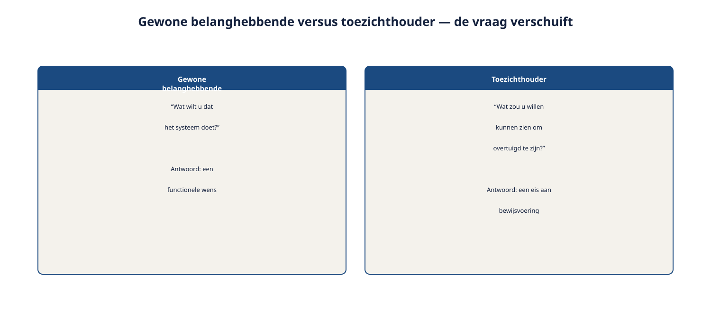

Deel 23 — Elicitation Specialist: van toepassen naar verantwoorden
Reader · Ductus-cursus Requirements Engineering · niveau 3 (specialist) · deel 23 van 30
Cursus Requirements Engineering — Ductus. Deze cursus bereidt voor op de CPRE-certificering van IREB, inclusief de Specialist-trap (praktijkwerk + vakpaper) van de Advanced Level-module Elicitation, en is uitdrukkelijk geen vervanging van het officiële syllabus- en examenmateriaal.
Leerdoelen
Na dit deel kun je:
- de elicitatie-aanpak achter een geërfd, niet meer toe te lichten requirementsdocument reconstrueren en beoordelen;
- elicitatie toepassen op een toezichthouder als belanghebbende, die geen wens heeft maar aantoonbaarheid vraagt;
- de structuur van een professioneel vakpaper toepassen om een elicitatiekeuze te verantwoorden;
- het verschil uitleggen tussen een Practitioner die een techniek toepast en een Specialist die een keuze schriftelijk en overtuigend verantwoordt.
23.1 Het document zonder auteur
Ruben opent het requirementsdocument van Kwintes Consultancy voor de Deelnemeradministratie-migratie. Het oogt professioneel: nette hoofdstukken, een stakeholderoverzicht, tientallen requirements. Maar wanneer hij zich afvraagt óf de stakeholderanalyse volledig was — zijn alle relevante partijen destijds echt gehoord, of ontbreekt er iemand, zoals ooit bij WGP 2.0 (niveau 1, bevinding R2) — is er niemand meer om het aan te vragen. Tobias Reyngoudt is niet meer bereikbaar.
Dit is de kern van Specialist-niveau werk: niet zelf elicitatie uitvoeren en verantwoorden, maar het werk van een ander reconstrueren en beoordelen, uitsluitend op basis van wat er ligt. Waar een Practitioner een techniek toepast en het resultaat direct kan toetsen bij de bron, moet een Specialist soms oordelen zonder die bron — en dat oordeel vervolgens net zo overtuigend onderbouwen alsof de bron er wél was.
23.2 Een elicitatie-audit uitvoeren
Om een geërfd document te beoordelen zonder de auteur te kunnen raadplegen, zoek je naar sporen van de elicitatie die eraan voorafging — niet naar een garantie, maar naar aanwijzingen die een gefundeerd oordeel mogelijk maken.
Is er een stakeholderoverzicht, en is het compleet? Vergelijk het overzicht met wat je uit andere bronnen weet over de Deelnemeradministratie-migratie (bijvoorbeeld: staat de deelnemersraad erin, gezien hun rol elders in het Mutatieplatform-programma? Staat KERN als afhankelijk systeem genoemd?). Een ontbrekende, voor de hand liggende partij is een sterke aanwijzing voor een onvolledige elicitatie (vergelijk R2, niveau 1).
Zijn er sporen van doorvragen, of alleen platte beweringen? Een requirement die een specifieke grens noemt ("binnen 48 uur") zonder enige toelichting waaróm, wijst op oppervlakkige elicitatie — vergelijk het ijsbergmodel (deel 4, niveau 1): een goed doorgevraagde requirement laat vaak iets van de onderliggende behoefte doorschemeren, ook in de uiteindelijke tekst.
Zijn er tegenstrijdigheden die op een gemist conflict wijzen? Twee requirements die elkaar net niet volledig dekken, kunnen wijzen op belanghebbenden die apart zijn geraadpleegd zonder consolidatie (deel 14) — een aanwijzing dat er nooit een consolidatiestap heeft plaatsgevonden.

Wat een elicitatie-audit niet is: een garantie dat de oorspronkelijke elicitatie goed of fout was. Het is een gefundeerde inschatting op basis van indirect bewijs — en het Specialist-niveau vraagt juist om deze onzekerheid expliciet te erkennen, in plaats van een schijnzekerheid te presenteren die de audit zelf niet rechtvaardigt.
23.3 Elicitatie bij een toezichthouder
Ellen Voskuijl (DNB) en Radboud Achterberg (AFM) zijn een belanghebbende-type dat niveau 1 en 2 nog niet behandelden. Ze hebben geen wens voor hoe een scherm eruitziet, geen mening over het aantal risicoprofielen. Ze willen weten: kun je aantonen dat het stelsel doet wat het moet doen?
Dit vraagt een andere elicitatievraag dan bij een gewone belanghebbende. In plaats van "wat wilt u dat het systeem doet" (deel 4, niveau 1), is de vraag bij een toezichthouder eerder: "wat zou u willen kunnen zien om overtuigd te zijn dat dit goed gaat?" Het antwoord is zelden een functionele wens — het is vaker een eis aan bewijsvoering: een rapportage, een auditspoor, een traceerbaarheidsketen die op verzoek te tonen is.
Voorbeeld: Ellen Voskuijl geeft, bij doorvragen, aan dat ze niet per se wil weten hóe Wegwijzer een risicoprofiel berekent, maar wél wil kunnen zien dat elke wijziging aan de rekenregels (deel 16, niveau 2) traceerbaar is naar een formeel besluit. Dit vertaalt zich niet naar een nieuwe functionele requirement voor Wegwijzer, maar naar een eis aan de traceerbaarheidsketen zelf (deel 9 en 18, niveau 2) — die nu ook een externe, toetsende blik moet kunnen doorstaan.

Dit sluit aan bij het beïnvloeden-zonder-gezag-principe uit deel 12: een toezichthouder heeft geen gezag over hoe Wegwijzer is gebouwd, maar wél over of het stelsel als geheel voldoende aantoonbaar is — en dat mandaat moet gerespecteerd worden zoals elk ander mandaat.
23.4 De structuur van een vakpaper
Het Specialist-examen van IREB vraagt, naast praktijkwerk, een vakpaper: een schriftelijke onderbouwing van een professionele keuze, bedoeld om een vakgenoot — niet de oorspronkelijke opdrachtgever — te overtuigen. Een bruikbare structuur:
- Probleemstelling — wat moest worden beoordeeld of besloten, en waarom was dit niet triviaal?
- Aanpak — welke methode is gebruikt (bijvoorbeeld de elicitatie-audit uit paragraaf 23.2), en waarom deze en niet een andere?
- Bevindingen — wat is er concreet gevonden, met verwijzing naar het bewijs?
- Overwogen alternatieven — welke andere interpretaties of aanpakken zijn overwogen en waarom afgevallen?
- Conclusie en aanbeveling — wat is het oordeel, en wat zou de vervolgstap moeten zijn?

Dit is geen nieuwe vaardigheid naast requirements engineering — het is dezelfde discipline (feiten, opties, consequenties leveren, zoals de rolgrens uit deel 1 al zei) toegepast op de vorm van een geschreven, overtuigend document in plaats van een mondelinge toelichting.
23.5 Toegepast: een paperfragment over de Kwintes-elicitatie
Probleemstelling. Was de stakeholderanalyse in het Kwintes-requirementsdocument voor de Deelnemeradministratie-migratie voldoende volledig om als betrouwbare basis te dienen voor integratie in de Stelselovergang?
Aanpak. Een elicitatie-audit (paragraaf 23.2) is uitgevoerd: vergelijking van het stakeholderoverzicht met de bekende belanghebbenden uit het bredere Mutatieplatform-programma, en een steekproef op vijftien requirements om sporen van doorvragen te beoordelen.
Bevindingen. De deelnemersraad ontbreekt in het stakeholderoverzicht, terwijl deelnemersinzicht in eigen gegevens elders in het programma (Wegwijzer, deel 3 en 12) een expliciete eis was. Van de vijftien onderzochte requirements tonen er negen sporen van doorvragen (concrete grenzen met toelichting); zes zijn platte beweringen zonder onderbouwing.
Overwogen alternatieven. Overwogen is het document als "voldoende, met kleine aanvullingen" te bestempelen. Dit is verworpen: het ontbreken van een belanghebbende die elders in het programma expliciet relevant bleek, is een structureel signaal, geen incident.
Conclusie en aanbeveling. Het document vraagt een aanvullende elicitatieronde specifiek gericht op de deelnemersraad, voordat het als baseline voor de Stelselovergang wordt aanvaard. De zes ongefundeerde requirements verdienen hernieuwde validatie (deel 9, niveau 1) tegen de daadwerkelijke behoefte.
Dit fragment illustreert de vorm; deel 29 en 30 werken de volledige beoordeling van het Kwintes-document verder uit.
Samenvatting
- Een elicitatie-audit reconstrueert, op basis van sporen in een document, of de onderliggende elicitatie waarschijnlijk gedegen was — zonder garantie, met expliciet erkende onzekerheid.
- Een toezichthouder is een nieuw soort belanghebbende: geen functionele wens, maar een eis aan aantoonbaarheid — de elicitatievraag verschuift van "wat wilt u" naar "wat zou u willen kunnen zien".
- Een vakpaper volgt vijf onderdelen: probleemstelling, aanpak, bevindingen, overwogen alternatieven, conclusie en aanbeveling.
- Specialist-niveau werk is dezelfde discipline als Practitioner-niveau, toegepast op het overtuigend schriftelijk verantwoorden van een keuze, vaak zonder de mogelijkheid om de oorspronkelijke bron te raadplegen.
Begrippen
elicitatie-audit · aantoonbaarheidseis · vakpaper · toezichthouder als belanghebbende
Leeswijzer naar het volgende deel
Deel 24 behandelt de Modeling Specialist-trap: modelleren op stelselniveau, waar meerdere programma's en toezichteisen samenkomen.